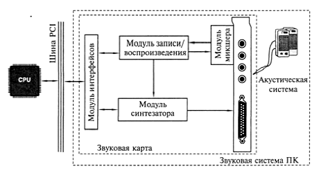
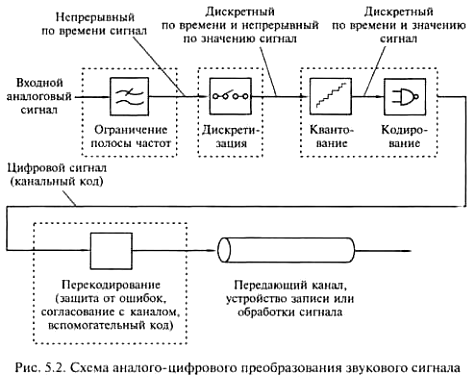
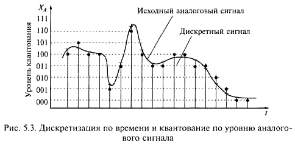
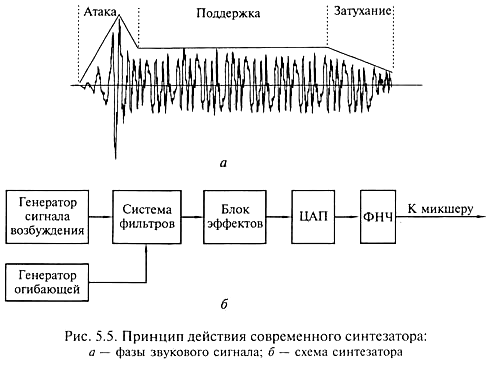

Для просмотра фильма "Как это работает: проигрыватель виниловых дисков (Discovery Chanel)" нажмите кнопку ВОСПРОИЗВЕДЕНИЕ.
Для просмотра фильма "Как это работает: микрофон (Discovery Chanel)" нажмите кнопку ВОСПРОИЗВЕДЕНИЕ.
Для просмотра фильма "Как это работает: электрогитара (Discovery Chanel)" нажмите кнопку ВОСПРОИЗВЕДЕНИЕ.
Звуковая система ПК в виде звуковой карты появилась в 1989 г., существенно расширив возможности ПК как технического средства информатизации.
Звуковая система ПК — комплекс программно-аппаратных средств, выполняющих следующие функции:
Классическая звуковая система, как показано на рис. 5.1, содержит: 
Первые четыре модуля, как правило, устанавливаются на звуковой карте. Причем существуют звуковые карты без модуля синтезатора или модуля записи/воспроизведения цифрового звука. Каждый из модулей может быть выполнен либо в виде отдельной микросхемы, либо входить в состав многофункциональной микросхемы. Таким образом, Chipset звуковой системы может содержать как несколько, так и одну микросхему.
Конструктивные исполнения звуковой системы ПК претерпевают существенные изменения; встречаются материнские платы с установленным на них Chipset для обработки звука.
Однако назначение и функции модулей современной звуковой системы (независимо от ее конструктивного исполнения) не меняются. При рассмотрении функциональных модулей звуковой карты принято пользоваться терминами «звуковая система ПК» или «звуковая карта».
Модуль записи и воспроизведения звуковой системы осуществляет аналого-цифровое и цифроаналоговое преобразования в режиме программной передачи звуковых данных или передачи их по каналам DMA (Direct Memory Access — канал прямого доступа к памяти).
Звук, как известно, представляет собой продольные волны, свободно распространяющиеся в воздухе или иной среде, поэтому звуковой сигнал непрерывно изменяется во времени и в пространстве.
Запись звука — это сохранение информации о колебаниях звукового давления в момент записи. В настоящее время для записи и передачи информации о звуке используются аналоговые и цифровые сигналы. Другими словами, звуковой сигнал может быть представлен в аналоговой или цифровой форме.
Если при записи звука пользуются микрофоном, который преобразует непрерывный во времени звуковой сигнал в непрерывный во времени электрический сигнал, получают звуковой сигнал в аналоговой форме. Поскольку амплитуда звуковой волны определяет громкость звука, а ее частота — высоту звукового тона, постольку для сохранения достоверной информации о звуке напряжение электрического сигнала должно быть пропорционально звуковому давлению, а его частота должна соответствовать частоте колебаний звукового давления.
На вход звуковой карты ПК в большинстве случаев звуковой сигнал подается в аналоговой форме. В связи с тем что ПК оперирует только цифровыми сигналами, аналоговый сигнал должен быть преобразован в цифровой. Вместе с тем акустическая система, установленная на выходе звуковой карты ПК, воспринимает только аналоговые электрические сигналы, поэтому после обработки сигнала с помощью ПК необходимо обратное преобразование цифрового сигнала в аналоговый.
Аналого-цифровое преобразование представляет собой преобразование аналогового сигнала в цифровой и состоит из следующих основных этапов: дискретизации, квантования и кодирования. Схема аналого-цифрового преобразования звукового сигнала представлена на рис. 5.2. 
Предварительно аналоговый звуковой сигнал поступает на аналоговый фильтр, который ограничивает полосу частот сигнала.
Дискретизация сигнала заключается в выборке отсчетов аналогового сигнала с заданной периодичностью и определяется частотой дискретизации. Причем частота дискретизации должна быть не менее удвоенной частоты наивысшей гармоники (частотной составляющей) исходного звукового сигнала. Поскольку человек способен слышать звуки в частотном диапазоне от 20 Гц до 20 кГц, максимальная частота дискретизации исходного звукового сигнала должна составлять не менее 40 кГц, т.е. отсчеты требуется проводить 40 000 раз в секунду. В связи с этим в большинстве современных звуковых систем ПК максимальная частота дискретизации звукового сигнала составляет 44,1 или 48 кГц.
Квантование по амплитуде представляет собой измерение мгновенных значений амплитуды дискретного по времени сигнала и преобразование его в дискретный по времени и амплитуде. На рис. 5.3 показан процесс квантования по уровню аналогового сигнала, причем мгновенные значения амплитуды кодируются 3-разрядными числами.
Кодирование заключается в преобразовании в цифровой код квантованного сигнала. При этом точность измерения при квантовании зависит от количества разрядов кодового слова. Если значения амплитуды записать с помощью двоичных чисел и задать длину кодового слова N разрядов, число возможных значений кодовых слов будет равно 2N. Столько же может быть и уровней квантования амплитуды отсчета. Например, если значение амплитуды отсчета представляется 16-разрядным кодовым словом, максимальное число градаций амплитуды (уровней квантования) составит 216=65 536. Для 8-разрядного представления соответственно получим 28=256 градаций амплитуды.
Аналого-цифровое преобразование осуществляется специальным электронным устройством - аналого-цифровым преобразователем (АЦП), в котором дискретные отсчеты сигнала преобразуются в последовательность чисел. Полученный поток цифровых данных, т.е. сигнал, включает как полезные, так и нежелательные высокочастотные помехи, для фильтрации которых полученные цифровые данные пропускаются через цифровой фильтр.
Цыфро-аналоговое преобразование в общем случае происходит в два этапа, как показано на рис. 5.4.
На первом этапе из потока цифровых данных с помощью цифроаналогового преобразователя (ЦАП) выделяют отсчеты сигнала, следующие с частотой дискретизации. На втором этапе из дискретных отсчетов путем сглаживания (интерполяции) формируется непрерывный аналоговый сигнал с помощью фильтра низкой частоты, который подавляет периодические составляющие спектра дискретного сигнала.
Для записи и хранения звукового сигнала в цифровой форме требуется большой объем дискового пространства. Например, стереофонический звуковой сигнал длительностью 60 с, оцифрованный с частотой дискретизации 44,1 кГц при 16-разрядном квантовании для хранения требует на винчестере около 10 Мбайт.
Для уменьшения объема цифровых данных, необходимых для представления звукового сигнала с заданным качеством, используют компрессию (сжатие), заключающуюся в уменьшении количества отсчетов и уровней квантования или числа бит, приходящихся на один отсчет.
Подобные методы кодирования звуковых данных с использованием специальных кодирующих устройств позволяют сократить объем потока информации почти до 20 % первоначального. Выбор метода кодирования при записи аудиоинформации зависит от набора программ сжатия - кодеков (кодирование-декодирование), поставляемых вместе с программным обеспечением звуковой карты или входящих в состав операционной системы.
Выполняя функции аналого-цифрового и цифроаналогового преобразований сигнала, модуль записи и воспроизведения цифрового звука содержит АЦП, ЦАП и блок управления, которые обычно интегрированы в одну микросхему, также называемую к о д е к о м. Основными характеристиками этого модуля являются: частота дискретизации; тип и разрядность АЦП и ЦАП; способ кодирования аудиоданных; возможность работы в режиме Ful Duplex.
Частота дискретизации определяет максимальную частоту записываемого или воспроизводимого сигнала. Для записи и воспроизведения человеческой речи достаточно 6-8 кГц; музыки с невысоким качеством - 20-25 кГц; для обеспечения высококачественного звучания (аудиокомпакт-диска) частота дискретизации должна быть не менее 44 кГц. Практически все звуковые карты поддерживают запись и воспроизведение стереофонического звукового сигнала с частотой дискретизации 44,1 или 48 кГц.
Разрядность АЦП и ЦАП определяет разрядность представления цифрового сигнала (8, 16 или 18 бит). Подавляющее большинство звуковых карт оснащено 16-разрядными АЦП и ЦАП. Такие звуковые карты теоретически можно отнести к классу Hi-Fi, которые должны обеспечивать студийное качество звучания. Некоторые звуковые карты оснащаются 20- и даже 24-разрядными АЦП и ЦАП, что существенно повышает качество записи/воспроизведения звука.
Ful Duplex (полный дуплекс) - режим передачи данных по каналу, в соответствии с которым звуковая система может одновременно принимать (записывать) и передавать (воспроизводить) аудиоданные. Однако не все звуковые карты поддерживают этот режим в полном объеме, поскольку не обеспечивают высокое качество звука при интенсивном обмене данными. Такие карты можно использовать для работы с голосовыми данными в Internet, например, при проведении телеконференций, когда высокое качество звука не требуется.
Электромузыкальный цифровой синтезатор звуковой системы позволяет генерировать практически любые звуки, в том числе и звучание реальных музыкальных инструментов. Принцип действия синтезатора иллюстрирует рис. 5.5.
Синтезирование представляет собой процесс воссоздания структуры музыкального тона (ноты). Звуковой сигнал любого музыкального инструмента имеет несколько временных фаз. На рис. 5.5, а показаны фазы звукового сигнала, возникающего при нажатии клавиши рояля. 
Для каждого музыкального инструмента вид сигнала будет своеобразным, но в нем можно выделить три фазы: атаку, поддержку и затухание. Совокупность этих фаз называется амплитудной огибающей, форма которой зависит от типа музыкального инструмента. Длительность атаки для разных музыкальных инструментов изменяется от единиц до нескольких десятков или даже до сотен миллисекунд. В фазе, называемой поддержкой, амплитуда сигнала почти не изменяется, а высота музыкального тона формируется во время поддержки. Последней фазе, затуханию, соответствует участок достаточно быстрого уменьшения амплитуды сигнала.
В современных синтезаторах звук создается следующим образом. Цифровое устройство, использующее один из методов синтеза, генерирует так называемый сигнал возбуждения с заданной высотой звука (ноту), который должен иметь спектральные характеристики, максимально близкие к характеристикам имитируемого музыкального инструмента в фазе поддержки, как показано на рис. 5.5, б. Далее сигнал возбуждения подается на фильтр, имитирующий амплитудно-частотную характеристику реального музыкального инструмента. На другой вход фильтра подается сигнал амплитудной огибающей того же инструмента. Далее совокупность сигналов обрабатывается с целью получения специальных звуковых эффектов, например, эха (реверберация), хорового исполнения (хо-рус). Далее производятся цифроаналоговое преобразование и фильтрация сигнала с помощью фильтра низких частот (ФНЧ). Основные характеристики модуля синтезатора:
Метод синтеза на основе частотной модуляции (Frequency Modulation Synthesis-FM-синтез) предполагает использование для генерации голоса музыкального инструмента как минимум двух генераторов сигналов сложной формы. Генератор несущей частоты формирует сигнал основного тона, частотно-модулированный сигналом дополнительных гармоник, обертонов, определяющих тембр звучания конкретного инструмента. Генератор огибающей управляет амплитудой результирующего сигнала. FМ-генератор обеспечивает приемлемое качество звука, отличается невысокой стоимостью, но не реализует звуковые эффекты. В связи с этим звуковые карты, использующие этот метод, не рекомендуются в соответствии со стандартом РС99.
Синтез звука на основе таблицы волн ( Wave Table Synthesis-Wt-синтез) производится путем использования предварительно оцифрованных образцов звучания реальных музыкальных инструментов и других звуков, хранящихся в специальной RОМ, выполненной в виде микросхемы памяти или интегрированной в микросхему памяти WT-генератора. WT-синтезатор обеспечивает генерацию звука с высоким качеством. Этот метод синтеза реализован в современных звуковых картах.
Объем памяти на звуковых картах с WT-синтезатором может увеличиваться за счет установки дополнительных элементов памяти (RОМ) для хранения банков с инструментами.
Звуковые эффекты формируются с помощью специального эффект-процессора, который может быть либо самостоятельным элементом (микросхемой), либо интегрироваться в состав WT-синтезатора. Для подавляющего большинства карт с WТ-синтезом эффекты реверберации и хоруса стали стандартными.
Синтез звука на основе физического моделирования предусматривает использование математических моделей звукообразования реальных музыкальных инструментов для генерации в цифровом виде и для дальнейшего преобразования в звуковой сигнал с помощью ЦАП. Звуковые карты, использующие метод физического моделирования, пока не получили широкого распространения, поскольку для их работы требуется мощный ПК.
Модуль интерфейсов обеспечивает обмен данными между звуковой системой и другими внешними и внутренними устройствами.
Интерфейс ISА в 1998 г. был вытеснен в звуковых картах интерфейсом РСI.
Интерфейс РСI обеспечивает широкую полосу пропускания (например, версия 2.1 - более 260 Мбит/с), что позволяет передавать потоки звуковых данных параллельно. Использование шины РСI позволяет повысить качество звука, обеспечив отношение сигнал/шум свыше 90 дБ. Кроме того, шина РСI обеспечивает возможность кооперативной обработки звуковых данных, когда задачи обработки и передачи данных распределяются между звуковой системой и СРU.
MIDI(Musikal Instrument Digital Interface - цифровой интерфейс музыкальных инструментов) регламентируется специальным стандартом, содержащим спецификации на аппаратный интерфейс: типы каналов, кабели, порты, при помощи которых MIDI-устройства подключаются один к другому, а также описание порядка обмена данными - протокола обмена информацией между MIDI-устройствами. В частности, с помощью MIDI-команд можно управлять светотехнической аппаратурой, видеооборудованием в процессе выступления музыкальной группы на сцене. Устройства с MIDI-интерфейсом соединяются последовательно, образуя своеобразную MIDI-сеть, которая включает контроллер — управляющее устройство, в качестве которого может быть использован как ПК, так и музыкальный клавишный синтезатор, а также ведомые устройства (приемники), передающие информацию в контроллер по его запросу. Суммарная длина MIDI-цепочки не ограничена, но максимальная длина кабеля между двумя MIDI-устройствами не должна превышать 15 метров.
Подключение ПК в MIDI-сеть осуществляется с помощью специального MIDI-адаптера, который имеет три MIDI-порта: ввода, вывода и сквозной передачи данных, а также два разъема для подключения джойстиков.
В состав звуковой карты входит интерфейс для подключения приводов СD-RОМ.
Модуль микшера звуковой карты выполняет:
число микшируемых сигналов на канале воспроизведения;
регулирование уровня сигнала в каждом микшируемом канале;
Программное управление микшером осуществляется либо средствами Windows, либо с помощью программы-микшера, поставляемой в комплекте с программным обеспечением звуковой карты.
Совместимость звуковой системы с одним из стандартов звуковых карт означает, что звуковая система будет обеспечивать качественное воспроизведение звуковых сигналов. Проблемы совместимости особенно важны для DOS-приложений. Каждое из них содержит перечень звуковых карт, на работу с которыми DOS-приложение ориентировано.
Стандарт Sound Blaster поддерживают приложения в виде игр для DOS, в которых звуковое сопровождение запрограммировано с ориентацией на звуковые карты семейства Sound Blaster.
Стандарт Windows Sound System (WWS) фирмы Microsoft включает звуковую карту и пакет программ, ориентированный в основном на бизнес-приложения.
Акустическая система (АС) непосредственно преобразует звуковой электрический сигнал в акустические колебания и является последним звеном звуковоспроизводящего тракта.
В состав АС, как правило, входят несколько звуковых колонок, каждая из которых может иметь один или несколько динамиков. Количество колонок в АС зависит от числа компонентов, составляющих звуковой сигнал и образующих отдельные звуковые каналы.
Например, стереофонический сигнал содержит два компонента - сигналы левого и правого стереоканалов, что требует не менее двух колонок в составе стереофонической акустической системы. Звуковой сигнал в формате Dolby Digital содержит информацию для шести звуковых каналов: два фронтальных стереоканала, центральный канал (канал диалогов), два тыловых канала и канал сверхнизких частот. Следовательно, для воспроизведения сигнала Doiby Digital акустическая система должна иметь шесть звуковых колонок.
Как правило, принцип действия и внутреннее устройство звуковых колонок бытового назначения и используемых в технических средствах информатизации в составе акустической системы РС практически не различаются.
В основном АС для ПК состоит из двух звуковых колонок, которые обеспечивают воспроизведение стереофонического сигнала. Обычно каждая колонка в АС для ПК имеет один динамик, однако в дорогих моделях используются два: для высоких и низких частот. При этом современные модели акустических систем позволяют воспроизводить звук практически во всем слышимом частотном диапазоне благодаря применению специальной конструкции корпуса колонок или громкоговорителей.
Для воспроизведения низких и сверхнизких частот с высоким качеством в АС помимо двух колонок используется третий звуковой агрегат - сабвуфер (Subwoofer), устанавливаемый под рабочим столом. Такая трехкомпонентная АС для ПК состоит из двух так называемых сателлитных колонок, воспроизводящих средние и высокие частоты (примерно от 150 Гц до 20 кГц), и сабвуфера, воспроизводящего частоты ниже 150 Гц.
Отличительная особенность АС для ПК - возможность наличия собственного встроенного усилителя мощности. АС со встроенным усилителем называется активной. Пассивная АС усилителя не имеет.
Главное преимущество активной АС состоит в возможности подключения к линейному выходу звуковой карты. Питание активной АС осуществляется либо от батареек (аккумуляторов), либо от электрической сети через специальный адаптер, выполненный в виде отдельного внешнего блока или модуля питания, устанавливаемого в корпус одной из колонок.
Выходная мощность акустических систем для ПК может изменяться в широком диапазоне и зависит от технических характеристик усилителя и динамиков. Если система предназначена для озвучивания компьютерных игр, достаточно мощности 15-20 Вт на колонку для помещения средних размеров. При необходимости обеспечения хорошей слышимости во время лекции или презентации в большой аудитории возможно использовать одну АС, имеющую мощность до 30 Вт на канал. С увеличением мощности АС увеличиваются ее габаритные размеры и повышается стоимость.
Современные модели акустических систем имеют гнездо для головных телефонов, при подключении которых воспроизведение звука через колонки автоматически прекращается.
Основные характеристики АС: полоса воспроизводимых частот, чувствительность, коэффициент гармоник, мощность.
Полоса воспроизводимых частот (Frequency Response) - это амплитудно-частотная зависимость звукового давления, или зависимость звукового давления (силы звука) от частоты переменного напряжения, подводимого к катушке динамика. Полоса частот, воспринимаемых ухом человека, находится в диапазоне от 20 до 20 000 Гц. Колонки, как правило, имеют диапазон, ограниченный в области низких частот 40-60 Гц. Решить проблему воспроизведения низких частот позволяет использование сабвуфера.
Чувствительность звуковой колонки (Senstivity) характеризуется звуковым давлением, которое она создает на расстоянии 1 м при подаче на ее вход электрического сигнала мощностью 1 Вт. В соответствии с требованиями стандартов чувствительность определяется как среднее звуковое давление в определенной полосе частот.
Чем выше значение этой характеристики, тем лучше АС передает динамический диапазон музыкальной программы. Разница между самыми «тихими» и самыми «громкими» звуками современных фонограмм 90-95 дБ и более. АС с высокой чувствительностью достаточно хорошо воспроизводят как тихие, так и громкие звуки.
Коэффициент гармоник (Total Harmonic Distortion - THD) оценивает нелинейные искажения, связанные с появлением в выходном сигнале новых спектральных составляющих. Коэффициент гармоник нормируется в нескольких диапазонах частот. Например, для высококачественных АС класса Hi-Fi этот коэффициент не должен превышать: 1,5% в диапазоне частот 250-1000 Гц; 1,5 % в диапазоне частот 1000-2000 Гц и 1,0 % в диапазоне частот 2000-6300 Гц. Чем меньше значение коэффициента гармоник, тем качественнее АС.
Электрическая мощность (Power Handling), которую выдерживает АС, является одной из основных характеристик. Однако нет прямой взаимосвязи между мощностью и качеством воспроизведения звука. Максимальное звуковое давление зависит, скорее, от чувствительности, а мощность АС в основном определяет ее надежность.
Часто на упаковке АС для ПК указывают значение пиковой мощности акустической системы, которая не всегда отражает реальную мощность системы, поскольку может превышать номинальную в 10 раз. Вследствие существенного различия физических процессов, происходящих при испытаниях АС, значения электрических мощностей могут отличаться в несколько раз. Для сравнения мощности различных АС необходимо знать, какую именно мощность указывает производитель продукции и какими методами испытаний она определена.
Среди производителей высококачественных и дорогих АС - фирмы Creative, Yamaha, Sony, Aiwa. АС более низкого класса выпускают фирмы Genius, Altec, JAZZ Hipster.
Некоторые модели колонок фирмы Microsoft подключаются не к звуковой карте, а к порту USB. В этом случае звук поступает на колонки в цифровом виде, а его декодирование производит небольшой Chipset, установленный в колонках.
Для просмотра фильма "Как это работает: акустическая система (Discovery Chanel)" нажмите кнопку ВОСПРОИЗВЕДЕНИЕ.
В настоящее время фирмы Intel, Compaq и Microsoft предложили новую архитектуру звуковой системы ПК. Согласно этой архитектуре модули обработки звуковых сигналов выносятся за пределы корпуса ПК, в котором на них действуют электрические помехи, и размещаются, например, в колонках акустической системы. В этом случае звуковые сигналы передаются в цифровой форме, что значительно повышает их помехозащищенность и качество воспроизведения звука. Для передачи цифровых данных в цифровой форме предусматривается использование высокоскоростных шин USB и IEEE 1394.
Еще одним направлением совершенствования звуковой системы является создание объемного (пространственного) звука, называемого трехмерным, или 3D-Sound (Three Dimentional Sound). Для получения объемного звучания производится специальная обработка фазы сигнала: фазы выходных сигналов левого и правого каналов сдвигаются относительно исходного. При этом используется свойство мозга человека определять положение источника звука путем анализа соотношения амплитуд и фаз звукового сигнала, воспринимаемого каждым ухом. Пользователь звуковой системы, оборудованной специальным модулем обработки 3D-звука, ощущает эффект «перемещения» источника звука.
Новым направлением применения мультимедийных технологий является создание домашнего театра на базе ПК (РС-Theater), т.е. варианта мультимедийного ПК, предназначенного одновременно нескольким пользователям для наблюдения за игрой, просмотра образовательной программы или фильма в стандарте DVD. РС-Theater в своем составе имеет специальную многоканальную акустическую систему, формирующую объемный звук (Surround Sound). Системы Surround Sound создают в помещении различные звуковые эффекты, причем пользователь ощущает, что он находится в центре звукового поля, а источники звука — вокруг него. Многоканальные звуковые системы Surround Sound используются в кинотеатрах и уже начинают появляться в виде устройств бытового назначения.
В многоканальных системах бытового назначения звук записывается на двух дорожках лазерных видеодисков или видеокассет по технологии Doby Surround, разработанной фирмой Dolby Laboratories. К наиболее известным разработкам в этом направлении относятся:
Dolby (Surround) Pro Logic - четырехканальная звуковая система, содержащая левый и правый стереоканалы, центральный канал для диалогов и тыловой канал для эффектов.
Dolby Surround Digital - звуковая система, состоящая из 5+1 каналов: левого, правого, центрального, левого и правого каналов тыловых эффектов и канала сверхнизких частот. Запись сигналов для системы выполняется в виде цифровой оптической фонограммы на кинопленке.
В отдельных моделях акустических колонок помимо стандартных регуляторов высоких/низких частот, громкости и баланса имеются кнопки для включения специальных эффектов, например, ЗD-звука, Dolby Surround и др.
Для просмотра фильма "Как это работает: MP3-player (Discovery Chanel)" нажмите кнопку ВОСПРОИЗВЕДЕНИЕ.